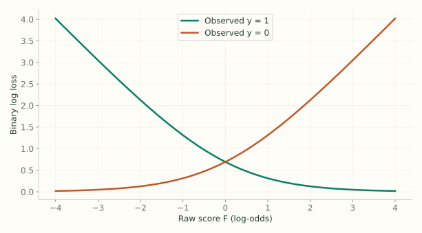
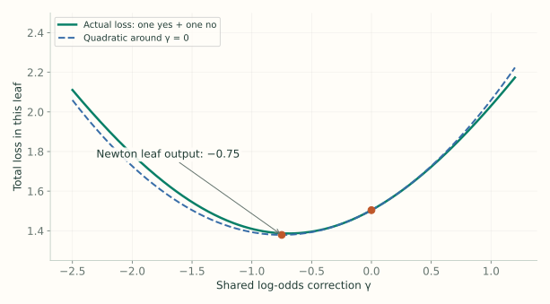
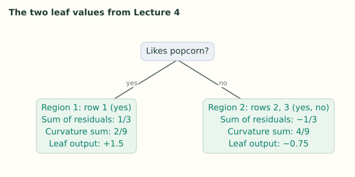

4. Classification: The Derivation
Notes on StatQuest with Josh Starmer · Gradient Boost Part 4 · 37:00 video. Explanations and redrawn figures follow the lecture’s worked example.
This lecture derives the classification steps from binary log loss, including the leaf formula used in Lecture 3. Keep three quantities separate: the observed label $y$, the additive score $F$, and the probability $p=\operatorname{sigmoid}(F)$.
1. Write the classification loss
Video 2:00 ↗If $y=1$, the model assigns probability $p$ to the observed outcome. If $y=0$, it assigns $1-p$. Taking the negative log gives a loss that is small when the observed outcome receives high probability:
This is $-\log p$ for a “yes” row and $-\log(1-p)$ for a “no” row. Boosting changes the log-odds score, so express the same loss in terms of $F$.
Substitution combines the two $\log(1+e^F)$ coefficients into $y+(1-y)=1$. This is the same loss, now written in the variable we will update.

2. Differentiate: the negative gradient is y − p
Video 9:18 ↗Negating that derivative gives the pseudo-residual:
This explains the quantity used in Lecture 3. It is a negative gradient with respect to log-odds, even though its simple formula contains a probability.
3. Derive the starting score
Video 10:59 ↗The lecture’s smaller data set has three people, with labels $[1,1,0]$. Choose one score $c$ for everyone and minimize total loss. Its derivative is
At the minimum this is zero, so $p_0=\sum_i y_i/n=2/3$. Convert to the score we store:
| Row | Likes popcorn | Age | Color | Label | Initial residual |
|---|---|---|---|---|---|
| 1 | Yes | 12 | Blue | 1 | $1/3$ |
| 2 | No | 87 | Green | 1 | $1/3$ |
| 3 | No | 44 | Blue | 0 | $-2/3$ |
4. Fit a tree to the pseudo-residuals
Video 14:09 ↗The lecture splits on “likes popcorn.” Row 1 goes to one leaf; rows 2 and 3 share the other. These leaves define the regions. Next, choose a log-odds correction $\gamma$ for each region.
5. Derive the leaf correction
Video 16:43 ↗For one leaf, the old scores $F_i$ are fixed. Adding the same $\gamma$ to every row in it gives total loss
The lecture approximates this loss near $\gamma=0$ with a quadratic. It matches the current loss, slope, and curvature:
Here $G$ is the sum of the rows’ first derivatives; $H$ is the sum of their second derivatives. The constant $Q(0)$ does not affect which correction minimizes the quadratic.
We already know $L'=p-y$. Since $y$ is fixed, the second derivative is the derivative of sigmoid:
Therefore $G=\sum_i(p_i-y_i)$ and $H=\sum_i p_i(1-p_i)$, with both sums restricted to this leaf. Differentiate the quadratic with respect to the shared addition:
The numerator supplies the direction; the denominator adjusts the step using the loss’s curvature. The sums appear because one leaf correction must account for every row in that leaf. This is one Newton step—the minimum of the local quadratic, not necessarily the exact minimum of the original loss.

6. Calculate the two leaf outputs
Video 24:53 ↗Every row starts with $p=2/3$, so its curvature contribution is $p(1-p)=2/9$.
For the second leaf, add the two residuals in the numerator and the two curvature terms in the denominator. Both rows receive this same correction.

7. Update scores, then probabilities, then residuals
Video 31:36 ↗Using the lecture’s learning rate $\nu=0.8$:
| Row | New score $F_1$ | Probability $p_1$ | New residual |
|---|---|---|---|
| 1 | $\log2+0.8(1.5)\approx1.8931$ | 0.8691 | +0.1309 |
| 2 | $\log2+0.8(-0.75)\approx0.0931$ | 0.5233 | +0.4767 |
| 3 | $\log2+0.8(-0.75)\approx0.0931$ | 0.5233 | −0.5233 |
Fit the next tree to these new residuals. Recalculate its leaf values with the new probabilities, add its scaled output to the current score, and repeat.
8. The final classifier
Video 35:22 ↗For each tree, $\operatorname{leaf}_m(x)$ is the single leaf reached by the new input. Add its contribution, convert the final score to a probability, and apply the classification threshold.
The video description corrects a logarithm identity and leaf indexing. Here $\log p-\log(1-p)=\log[p/(1-p)]$, and each tree routes a row to exactly one leaf.